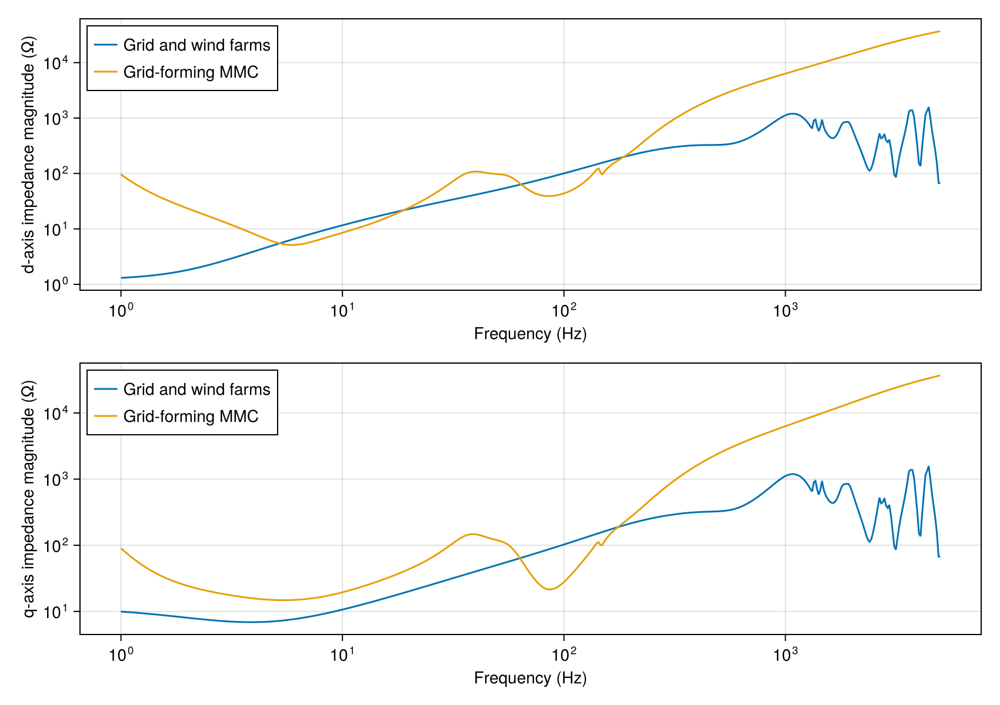

A grid-forming MMC in a weak grid
A 200 MVA MMC supports a 380 kV grid supplied through 32.7 mH of inductance. Wind farms inject 600 MW each at buses 12, 13 and 14. The impedance at Bus 7 combines the lines with the wind farms' current controls and PLLs.
using PowerImpedance
using CairoMakie
voltage = 380 / sqrt(3);Grid-forming MMC
The MMC has a 66/380 transformer and 400 submodules per arm.
electrical = ElectricalMMC(turnsRatio = 66/380, Lᵣ = 0.18 * (66^2/200) / (2π * 50),
Rᵣ = 0.001 * (66^2/200), Rₐᵣₘ = 0.4, Lₐᵣₘ = 46.125e-3, Cₐᵣₘ = 11.3867e-3, N = 400);Second-order filters with a 140 Hz cutoff smooth the measured active and reactive powers.
measurement = Measurement(P_ac = PowerImpedance.Butterworth(order = 2, ωc = 140 * 2π),
Q_ac = PowerImpedance.Butterworth(order = 2, ωc = 140 * 2π));The PLL measures the grid frequency for the damping term of the virtual swing equation.
pll = PLLSynchronization(pi_ctrl = PIControl(Kp = 0.28, Ki = 12.5664),
filter = PowerImpedance.Butterworth(order = 1, ωc = 75 * 2π));The virtual swing equation sets the MMC angle from active-power imbalance, inertia and damping.
sync = VSEWithDamping(H = 5, K_d = 100, K_ω = 10, ω_ref = 1, pll = pll);Reactive-power control adjusts the voltage reference to absorb 100 MVAr at zero active power.
reactive_control = OuterReactiveQControl(pi_ctrl = PIControl(Kp = 0, Ki = 3));The virtual impedance converts the voltage error into current references through 0.20 pu inductance. Its second-order voltage filter has a 763 rad/s cutoff.
virtual_impedance = CCVI(R_v = 0, L_v = 0.20, V_d_ref = 1, V_q_ref = 0,
filter = PowerImpedance.Butterworth(order = 2, ωc = 763));The AC current loop follows these references and filters voltage feedforward at 200 Hz.
current_control = InnerCurrentPIControl(pi_ctrl = PIControl(Kp = 1.361, Ki = 587.463),
filter = PowerImpedance.Butterworth(order = 2, ωc = 200 * 2π),
activate_ω_c_multiplication = false);
delta_control = ΔdqControlGFM(outer_reactive = reactive_control, vi = virtual_impedance,
occ = current_control);Total energy control balances the energy stored in the arm capacitors using filtered AC power.
energy_control = TotalEnergyControl(pi_control = PIControl(Kp = 0.404, Ki = 8.647),
power_filter = PowerImpedance.Butterworth(order = 2, ωc = 140 * 2π));Zero-sequence current control regulates the DC-side current from the energy controller.
zero_control = ZeroSequenceCurrentControl(PIControl(Kp = 0.341, Ki = 147.600));Circulating current suppression controls the second-harmonic current between the arms.
circulating_control = CirculatingCurrentSuppressionControl(PIControl(Kp = 0.341,
Ki = 147.600));
sigma_control = ΣdqzControlTEC(tec = energy_control, zscc = zero_control,
ccsc = circulating_control);Modulation applies a 200 microsecond delay represented by a 5/5 Padé approximation.
modulation = UncompensatedModulation(timeDelay = 200e-6, padeOrderNum = 5,
padeOrderDen = 5);The mmc constructor sets the 200 MVA base used to normalize arm and transformer values.
MMC1 = let model = mmc(vDC_base = 150, Sbase = 200, vACbase_LL_RMS = 66, elec = electrical,
meas = measurement, sync = sync, delta_control = delta_control,
sigma_control = sigma_control, modulation = modulation)
b = bases(model)
component(model; sync = (p_ref = 0.0,),
delta_control = (outer_reactive = (q_ref = -100 / b.S,),),
powerflow = (; v_dc = 150 / b.v_dc,
v_ac = (voltage * sqrt(2)) / b.v_ac))
end;Wind farms
Each wind farm uses a two-level converter with a 0.08 pu reactor. The tlc constructors below set its 600 MVA base.
wind_electrical = ElectricalTLC(Lᵣ = 0.08 * (380^2/600) / (2π * 50),
Rᵣ = 0.0008 * (380^2/600));First-order filters smooth measured AC voltages and currents with a 10000 rad/s cutoff.
wind_measurement = Measurement(v_ac = PowerImpedance.Butterworth(order = 1, ωc = 1e4),
i_ac = PowerImpedance.Butterworth(order = 1, ωc = 1e4));Each wind-farm PLL follows its terminal-voltage angle through an 80 Hz filter.
wind_sync = PLLSynchronization(
pi_ctrl = PIControl(Kp = 0.397887357729738, Ki = 7.957747154594767),
filter = PowerImpedance.Butterworth(order = 1, ωc = 80 * 2π));Active-power control sets the d-axis current reference for 600 MW injection.
wind_power = OuterActivePowerControl(pi_ctrl = PIControl(Kp = 0.01, Ki = 10));Reactive-power control sets the q-axis current reference for zero reactive power.
wind_reactive = OuterReactiveQControl(pi_ctrl = PIControl(Kp = 0.01, Ki = 10));The inner current loop tracks both references, with direct modulation of its voltage commands.
wind_current = InnerCurrentPIControl(pi_ctrl = PIControl(Kp = 0.254647908947033, Ki = 0.8));
wind_limits = PowerImpedance.Limits(
P_min = 0.9 * 600, P_max = 1.1 * 600, Q_min = -0.5 * 600, Q_max = 0.5 * 600);Wind farm WF1 injects its power at Bus 12.
WF1 = let model = tlc(Sbase = 600, vACbase_LL_RMS = 380, vDCbase = 640,
elec = wind_electrical, meas = wind_measurement, sync = wind_sync,
outerActive = wind_power, outerReactive = wind_reactive,
innerCurrent = wind_current, innerVoltage = NoInnerVoltageControl(),
mod = NoModulation(), limits = wind_limits)
b = bases(model)
component(model; outerActive = (p_ref = 600 / b.S,),
outerReactive = (q_ref = 0.0,),
powerflow = (; v_dc = 640 / b.v_dc,
v_ac = (voltage * sqrt(2)) / b.v_ac,
p_dc = 0 / b.S))
end;Wind farm WF2 injects its power at Bus 13.
WF2 = let model = tlc(Sbase = 600, vACbase_LL_RMS = 380, vDCbase = 640,
elec = wind_electrical, meas = wind_measurement, sync = wind_sync,
outerActive = wind_power, outerReactive = wind_reactive,
innerCurrent = wind_current, innerVoltage = NoInnerVoltageControl(),
mod = NoModulation(), limits = wind_limits)
b = bases(model)
component(model; outerActive = (p_ref = 600 / b.S,),
outerReactive = (q_ref = 0.0,),
powerflow = (; v_dc = 640 / b.v_dc,
v_ac = (voltage * sqrt(2)) / b.v_ac,
p_dc = 0 / b.S))
end;Wind farm WF3 injects its power at Bus 14.
WF3 = let model = tlc(Sbase = 600, vACbase_LL_RMS = 380, vDCbase = 640,
elec = wind_electrical, meas = wind_measurement, sync = wind_sync,
outerActive = wind_power, outerReactive = wind_reactive,
innerCurrent = wind_current, innerVoltage = NoInnerVoltageControl(),
mod = NoModulation(), limits = wind_limits)
b = bases(model)
component(model; outerActive = (p_ref = 600 / b.S,),
outerReactive = (q_ref = 0.0,),
powerflow = (; v_dc = 640 / b.v_dc,
v_ac = (voltage * sqrt(2)) / b.v_ac,
p_dc = 0 / b.S))
end;Lines and sources
The overhead conductors have 10 m phase spacing and 30 m height over 100 ohm metre earth.
conductors = Conductors(organization = :flat, nᵇ = 3, nˢᵇ = 1, Rᵈᶜ = 0.063,
rᶜ = 0.015, yᵇᶜ = 30, Δyᵇᶜ = 0, Δxᵇᶜ = 10, Δ̃xᵇᶜ = 0, dˢᵇ = 0, dˢᵃᵍ = 10);
groundwires = Groundwires(
nᵍ = 2, Rᵍᵈᶜ = 0.92, rᵍ = 0.0062, Δxᵍ = 6.5, Δyᵍ = 7.5, dᵍˢᵃᵍ = 10);Line T12_13 joins buses 12 and 13 over 100 km.
T12_13 = overhead_line(length = 100e3, conductors = conductors, groundwires = groundwires,
earth_parameters = (1, 1, 100));Line T6_12 joins buses 6 and 12 over 100 km.
T6_12 = overhead_line(length = 100e3, conductors = conductors, groundwires = groundwires,
earth_parameters = (1, 1, 100));Line T6_13 joins buses 6 and 13 over 20 km.
T6_13 = overhead_line(length = 20e3, conductors = conductors, groundwires = groundwires,
earth_parameters = (1, 1, 100));Line T13_14 joins buses 13 and 14 over 20 km.
T13_14 = overhead_line(length = 20e3, conductors = conductors, groundwires = groundwires,
earth_parameters = (1, 1, 100));Line T9_14 joins buses 14 and 9 over 20 km.
T9_14 = overhead_line(length = 20e3, conductors = conductors, groundwires = groundwires,
earth_parameters = (1, 1, 100));Line T7_9 joins Bus 9 to the MMC at Bus 7 over 20 km.
T7_9 = overhead_line(length = 20e3, conductors = conductors, groundwires = groundwires,
earth_parameters = (1, 1, 100));The external source supplies Bus 6 through a resistance of 1.0263 ohm and an inductance of 32.7 mH.
G2 = ac_source(v = voltage * sqrt(2));
Zg2 = impedance(z = s -> 1.0263 + 0.0327s, conductors = 3);Ideal DC sources supply the wind farms at 640 kV and the MMC at 150 kV pole to pole.
DC_WF1 = dc_source(v = 640);
DC_WF2 = dc_source(v = 640);
DC_WF3 = dc_source(v = 640);
DC_MMC = dc_source(v = 150);
elements = (; MMC1, WF1, WF2, WF3, T12_13, T6_12, T6_13, T13_14, T9_14, T7_9,
G2, Zg2, DC_WF1, DC_WF2, DC_WF3, DC_MMC);The wind farms connect to the meshed lines, and the MMC connects at the end of the branch from Bus 9. The AC buses represent each connected port in d/q coordinates in the 50 Hz frame.
connections = (
NetworkBuilder.Bus(:Source2; ports = ((:G2, :ac), (:Zg2, :side1)), domain = ACDQ),
NetworkBuilder.Bus(:Bus6; ports = ((:Zg2, :side2), (:T6_12, :side1), (:T6_13, :side1)),
domain = ACDQ),
NetworkBuilder.Bus(:Bus12; ports = ((:T6_12, :side2), (:T12_13, :side1), (:WF1, :ac)),
domain = ACDQ),
NetworkBuilder.Bus(:Bus13;
ports = ((:T12_13, :side2), (:T6_13, :side2), (:T13_14, :side1), (:WF2, :ac)),
domain = ACDQ),
NetworkBuilder.Bus(:Bus14; ports = ((:T13_14, :side2), (:T9_14, :side1), (:WF3, :ac)),
domain = ACDQ),
NetworkBuilder.Bus(:Bus9; ports = ((:T9_14, :side2), (:T7_9, :side1)), domain = ACDQ),
NetworkBuilder.Bus(:Bus7; ports = ((:T7_9, :side2), (:MMC1, :ac)), domain = ACDQ),
NetworkBuilder.Bus(:WindDC1; ports = ((:DC_WF1, :dc), (:WF1, :dc))),
NetworkBuilder.Bus(:WindDC2; ports = ((:DC_WF2, :dc), (:WF2, :dc))),
NetworkBuilder.Bus(:WindDC3; ports = ((:DC_WF3, :dc), (:WF3, :dc))),
NetworkBuilder.Bus(:ConverterDC; ports = ((:DC_MMC, :dc), (:MMC1, :dc)))
);Impedance at Bus 7
The solved power flow sets the converter currents and angles for linearization. Grid forming sets a voltage behind a virtual impedance, with current references that respond to voltage error. The wind farms follow the grid angle and regulate power through current references that enter their terminal admittances.
network = NetworkBuilder.define(elements, connections;
options = (; voltageBase = voltage,
power_flow = (; is_bounded = (; bus_voltage = true),
optimizer = (; hessian_approximation = "limited-memory"))));
power_flow = compute(PowerFlowProblem(network), ACDCPowerFlow());
linearized = compute(LinearizationProblem(network, power_flow), AdmittanceLinearization());
grid_impedance = compute(
PowerImpedanceProblem(linearized.network_model;
nodes = [:Bus7d, :Bus7q], eliminated_elements = [:MMC1], frequency_range = (
1, 5e3, 500)),
NodalImpedance());
mmc_impedance = compute(
PowerImpedanceProblem(linearized.network_model;
nodes = [:Bus7d, :Bus7q], eliminated_elements = [:T7_9], frequency_range = (
1, 5e3, 500)),
NodalImpedance());[ Info: LOCALLY_SOLVED
[ Info: Power flow converged successfully.
[ Info: Terminal operating values: Dict{Symbol, NamedTuple}(:G2 => (ac = ACPortValues(310.2687007525359, 3.400816828892206e-31, 1746.8383588768363, -426.13364106142535),), :WF3 => (ac = ACPortValues(308.5863048292799, 0.2506867166424996, -600.0, 0.0), dc = DCPortValues(640.0, 600.4852481357091)), :WF2 => (ac = ACPortValues(308.6900234606708, 0.2131697987145672, -600.0, 3.049367614273365e-26), dc = DCPortValues(640.0, 600.4849221075677)), :DC_WF1 => (dc = DCPortValues(640.0, -600.4735654673588),), :DC_WF2 => (dc = DCPortValues(640.0, -600.4849221075677),), :DC_MMC => (dc = DCPortValues(150.0, -0.5267424275364538),), :WF1 => (ac = ACPortValues(312.36946432957967, 0.2613306144518358, -600.0, 0.0), dc = DCPortValues(640.0, 600.4735654673588)), :MMC1 => (ac = ACPortValues(305.0394931645953, 0.2523776881527784, 1.5993176325949373e-27, 100.0), dc = DCPortValues(150.0, 0.5267424275364538)), :DC_WF3 => (dc = DCPortValues(640.0, -600.4852481357091),))
[ Info: Starting to solve for steady-state solution
[ Info: MMC steady-state solution found!
[ Info: Starting to solve for steady-state solution
[ Info: TLC steady-state solution found!
[ Info: Starting to solve for steady-state solution
[ Info: TLC steady-state solution found!
[ Info: Starting to solve for steady-state solution
[ Info: TLC steady-state solution found!The MMC has peaks near 40 Hz of 108 ohms on the d axis and 147 ohms on the q axis. Above about 180 Hz, its impedance exceeds that of the grid and wind farms on both axes. The first large peak of the grid impedance reaches about 1.2 kilohms near 1.08 kHz.
comparison = Figure(size = (850, 600));
for (index, label) in ((1, "d"), (2, "q"))
axis = Axis(comparison[index, 1]; xlabel = "Frequency (Hz)",
ylabel = "$label-axis impedance magnitude (Ω)", xscale = log10, yscale = log10);
lines!(axis, real.(grid_impedance.frequencies) ./ (2π),
abs.(grid_impedance.response[index, index, :]); label = "Grid and wind farms");
lines!(axis, real.(mmc_impedance.frequencies) ./ (2π),
abs.(mmc_impedance.response[index, index, :]); label = "Grid-forming MMC");
axislegend(axis; position = :lt);
end
comparison
Back to Examples